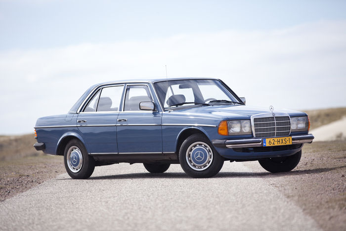

Volkswagen was faced by major financial difficulties in the early 1970s; with its ageing Beetle still selling strongly all over the world but its newer models had been less successful.
However, the company then enjoyed a revival with the arrival of the popular Passat in 1973, Golf in 1974 and Polo in 1975 - all of these cars featured the new front-wheel drive hatchback layout which was enjoying a rise in popularity across Europe

he Scirocco coupe of 1974 was also a success in the smaller sports car market, competing against the likes of the Ford Capri and Opel Manta.
Volkswagen and Audi both enjoyed a growing rise in popularity in overseas markets during the 1970s and this continued throughout the 1980s.
Audi launched a well-received large saloon model, the Audi 100, in 1968, and followed this four years later with the smaller Audi 80, winner of the European Car of the Year award for 1973.